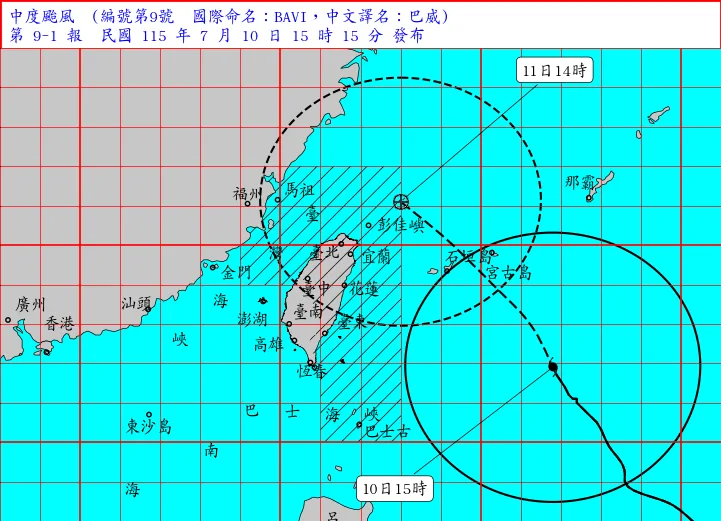

受巴威颱風外圍環流與後續天候影響，原訂 7 月 11 日（六）的《為伍》團練取消。請校友與在校生以安全為優先，避免在風雨或交通狀況不穩定時勉強外出。
7 月 12 日（日）的團練目前暫列為待確認行程，將依颱風動向、嘉義地區天候與後續公告隨時更新。若有調整，會再透過社群與網站最新消息同步通知。

後續團練時間表
| 7/11（六） | 團練取消 |
|---|---|
| 7/12（日） | 暫定 13:30 起，依颱風動向與天候狀況另行通知 |
| 7/18（六） | 18:30–21:30 |
| 7/19（日） | 14:00–17:00 |
| 7/25（六） | 18:30–21:30 |
| 7/26（日） | 14:00–17:00 |
| 8/1（六） | 18:30–21:30 |
| 8/2（日） | 14:00–17:00 |
| 8/3（一） | 18:30–21:30 |
| 8/4（二） | 18:30–21:30 |
| 8/5（三） | 18:30–21:30 |
| 8/6（四） | 18:30–21:30 |
| 8/7（五） | 18:30–21:30 |
以上時程將依實際天候與團務安排調整，請以後續正式公告為準。也請各聲部協助轉知團員，留意群組訊息與本網站更新。